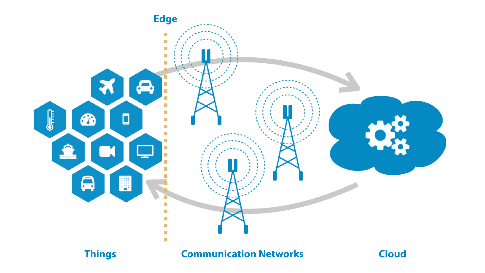

TECNOLOGÍAS EMERGENTES
Edge & Fog Computing
El crecimiento del Internet de las Cosas ha provocado que una gran cantidad de dispositivos generen información constantemente. Edge Computing y Fog Computing permiten acercar parte del procesamiento de esos datos al lugar donde son generados.
Conocer más
INTRODUCCIÓN
Procesamiento más cerca de los datos
Edge Computing y Fog Computing forman parte de modelos de computación distribuida que buscan reducir la distancia entre los datos y los recursos utilizados para procesarlos.
BENEFICIOS
¿Por qué acercar el procesamiento?
Menor latencia
Al procesar información cerca de su origen, se puede reducir el tiempo necesario para enviar datos hacia servidores ubicados a mayor distancia.
Uso del ancho de banda
Parte de la información puede ser procesada, filtrada o resumida antes de enviarse hacia servicios alojados en la nube.
Respuesta más rápida
Algunas aplicaciones pueden tomar decisiones cerca del lugar donde se generan los datos, sin depender constantemente de un servidor remoto.
Procesamiento distribuido
Las tareas pueden distribuirse entre dispositivos Edge, nodos Fog y servicios Cloud según las necesidades de cada sistema.
Edge y Fog Computing en IoT
Internet de las Cosas (IoT) utiliza dispositivos, sensores y componentes conectados capaces de generar y compartir información mediante una red.
Cuando existe una gran cantidad de dispositivos, enviar continuamente todos los datos hacia la nube puede no ser necesario. Edge Computing permite procesar información cerca del dispositivo, mientras que Fog Computing puede utilizar nodos intermedios para recibir información procedente de varios equipos.
Ejemplo
Un sensor de temperatura puede generar datos cada pocos segundos. En lugar de enviar individualmente cada lectura hacia la nube, los datos pueden procesarse o agruparse cerca del dispositivo antes de transmitir la información necesaria.

MULTIMEDIA
Conoce más sobre estas tecnologías
El siguiente material permite complementar la información presentada en el sitio.
Video sobre Edge Computing
Video complementario
Conoce las diferencias entre Edge y Fog Computing
Explora sus características, arquitectura y relación con Cloud Computing e Internet de las Cosas.
Ir a Acerca de